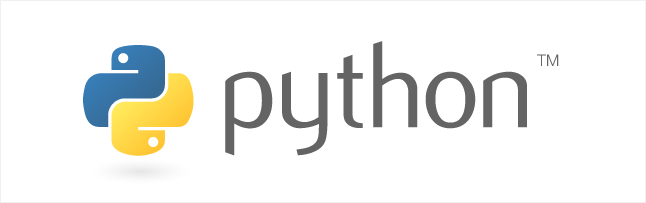

프로그래머가 되겠다고 마음먹고 처음으로 접한 언어다. 현재 TKinter로 크롤링한 자료를 템플릿에 띄우는 과정까지 연습하고 있었다. 사실상 왜 배우는지에 대한, 그리고 어떻게 더 진행해야 할 지에 대한 정보가 너무나 막연해서 잠깐 접고 있는 상태이다. 자바를 다시 시작하기 전에 파이썬을 할 것이며 파이썬으로 자바스크립트를 보조하거나, 웹에 연동할 수 있는 부분에 대해서 공부할 것이다. 이후에 자바를 다시 시작하게 될 것이라면 자바를 배운 뒤에 jsp등의 언어를 통해서 백엔드 디벨롭에 대해 다시금 공부하려고 한다. 이 언어에 대한 개인적인 소감은, 자바에 비해 매우 간단하여 은미에게 가르칠 경우 금방 내가 아는 수준까지 올라와줄 것이라 믿고있다. 쉬울뿐 아니라, 자바가 매우 긴 소스코드로 단 한 줄을 띄우는데 반해 강력한 기능을 갖고 있다고 생각한다.
솔직히 아직도 자바와의 차이점에 대해서 잘 이해하지 못하고 있으니 곧, 곧 알게 될 것이다.
